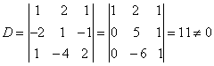

1.4 克拉默法则
克拉默法则
在§1中，利用二阶行列式，有定理1.1，可以较方便求解二元线性方程组，这个定理可以推广到n元线性方程组上，有以下定理（称为克拉默法则）。
|
| 例 1：解线性方程组 解：方程组的系数行列式 因此方程组有唯一解 又， 则方程组的唯一解为 |
|
克拉默法则固然是求解线性方程组的一个方法，但要求条件较多，且当未知元个数较多时，计算行列式是很麻烦的，下一章将介绍线性方程组的消元解法。 现把克拉默法则应用于特殊的所谓齐次线性方程组，如果线性方程组（4。1）的常数项 齐次线性方程组显然有解，例如就是一个解，称为零解，那么，对齐次线性方程组需讨论的问题是，在什么条件下，除零解外，还有非零解？ |
|
|
例 2：已知方程组有非零解，求参数t的值。 解：方程组的系数行列式 由方程组有非零解，故 |
请认真答题，测试一下你对前面知识点的学习情况！
(单选题) 3．k为（ ）时方程组只有零解。
【答案】A
【解析】方程组只有零解的充要条件
∴K≠-1，4时方程组只有零解
【知识点】克拉默法则